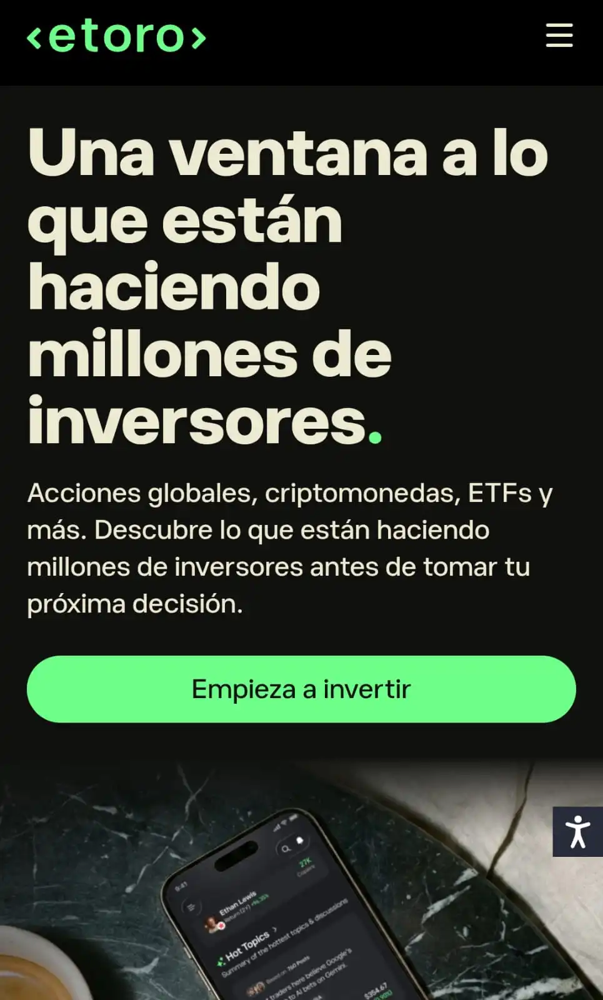
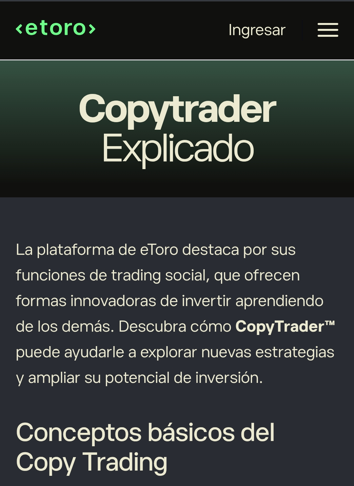
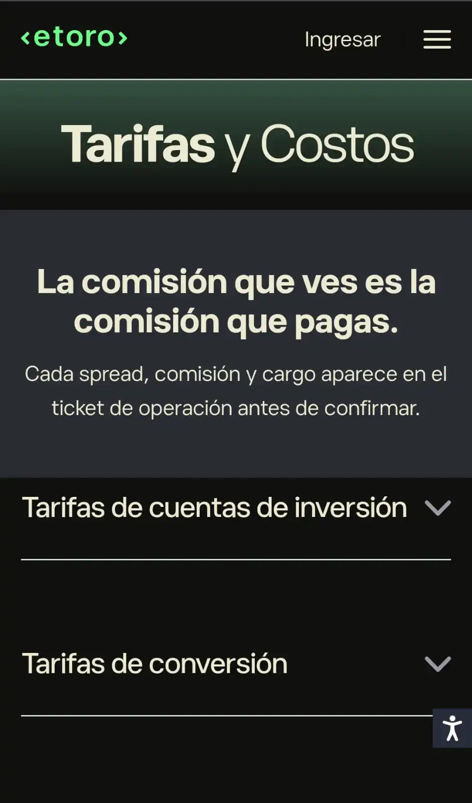
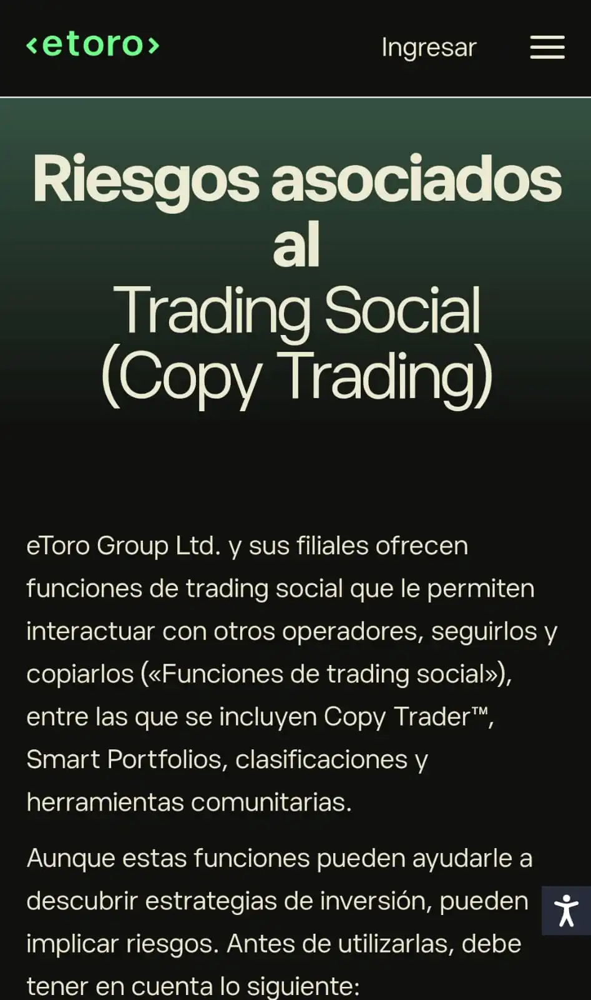

C opyTrader forma parte de las herramientas de inversión de eToro y plantea una forma distinta de participar en los mercados: seguir la actividad de otro inversor y replicar sus operaciones desde la propia cuenta.
¿Qué es CopyTrader de eToro y cómo funciona?

COPYTRADERCopyTrader es una función de eToro que permite replicar las operaciones de otros inversores disponibles en la plataforma.
La herramienta está diseñada para que las operaciones del inversor seleccionado puedan reproducirse automáticamente en la cuenta que decide copiarlo.
Para seleccionar un perfil, eToro ofrece información sobre los inversores disponibles, incluyendo datos relacionados con su rendimiento histórico y nivel de riesgo, entre otros indicadores.
Esta información permite conocer el comportamiento registrado de cada perfil antes de tomar una decisión.
Sin embargo, estos datos corresponden al comportamiento pasado de una estrategia y no representan una garantía sobre sus resultados futuros.
Copiar a otro inversor tampoco elimina la exposición a las variaciones del mercado ni la posibilidad de obtener pérdidas.
¿Cómo funciona CopyTrader de eToro al copiar a un inversor?

FUNCIONAMIENTOCopyTrader de eToro está planteado para que los usuarios puedan replicar la actividad de otros inversores disponibles en la plataforma. La herramienta permite seleccionar un perfil y seguir su estrategia de inversión mediante el sistema de copia.
Según la documentación de eToro, las operaciones copiadas buscan replicar de forma proporcional la actividad del inversor seleccionado , aunque las condiciones de ejecución pueden generar diferencias entre ambas cuentas. Por ello, replicar la actividad de otro inversor no debe entenderse como una reproducción necesariamente idéntica de sus resultados.
El resultado de una copia puede verse afectado por factores como el capital destinado, las operaciones realizadas, el momento de ejecución y la evolución del mercado. El historial de un inversor tampoco constituye una garantía sobre los resultados que puedan obtenerse posteriormente.
¿Cuánto cuesta usar CopyTrader de eToro?

COSTESEl uso de CopyTrader no implica, según la información de tarifas publicada por eToro , una comisión adicional específicamente asociada a la función de copiar a otro inversor. Esto no significa que las operaciones realizadas mediante la herramienta estén necesariamente libres de otros costos.
Las posiciones copiadas pueden estar sujetas a las tarifas que correspondan al instrumento utilizado. En particular, eToro señala que las posiciones abiertas mediante CopyTrader están sujetas a las mismas tarifas de spread y nocturnas que las operaciones manuales, cuando estas correspondan.
Por esta razón, el costo de utilizar CopyTrader debe distinguirse de la comisión específica por utilizar la herramienta. Una cosa es el acceso a la función de copia y otra son los costos que puedan estar asociados a las operaciones que se ejecutan mediante ella.
Las condiciones y tarifas pueden cambiar con el tiempo, por lo que la información publicada por eToro para cada instrumento constituye la referencia adecuada para conocer los costos vigentes antes de realizar una operación.
¿Qué es el spread y cómo afecta a una operación?
El spread es la diferencia entre el precio de compra y el precio de venta de un activo en un momento determinado. Aunque suele mencionarse junto a las comisiones, no constituye necesariamente un cargo separado aplicado por la plataforma.
Según la información publicada por eToro, el spread de mercado refleja las condiciones existentes entre los precios de oferta y demanda y puede variar dependiendo del activo y de las condiciones del mercado.
En determinadas operaciones, además del spread de mercado pueden existir otros costos establecidos para el instrumento correspondiente. Por ello, observar únicamente el spread no siempre permite conocer por completo el costo de una posición.
En CopyTrader, esta distinción también resulta relevante: la ausencia de una comisión específica por utilizar la función no implica que las posiciones copiadas estén separadas de los costos que correspondan al instrumento negociado.
Conversión de divisas en eToro
La conversión de divisas puede formar parte del costo de una operación cuando los fondos y el activo se encuentran denominados en monedas diferentes. Su aplicación depende de la forma en que se realice la operación y de las monedas involucradas.
La información publicada por eToro señala que las comisiones de conversión pueden variar según factores como la ubicación del usuario, el método de pago y el nivel dentro de su programa Club.
Para los usuarios cuya moneda local no sea el dólar estadounidense, este aspecto puede adquirir especial importancia al calcular cuánto capital queda disponible para invertir después de una conversión.
Por ello, la conversión de divisas debe considerarse por separado de las comisiones propias de una operación. Son costos diferentes y pueden aparecer en momentos distintos dentro del proceso de inversión.
¿eToro cobra una comisión por inactividad?
Actualmente, la información de tarifas publicada por eToro indica que la comisión por inactividad es gratuita. Por tanto, una cuenta que permanezca sin actividad no aparece sujeta a un cargo de inactividad dentro de la estructura de tarifas mostrada por la plataforma.
Esta condición es diferente de otros costos que puedan estar asociados a determinadas operaciones, conversiones de divisas, retiros o instrumentos financieros. La ausencia de una tarifa por inactividad no significa que todas las operaciones realizadas en la cuenta estén libres de costos.
Como las tarifas y condiciones de una plataforma financiera pueden modificarse, la información vigente publicada por eToro debe considerarse la referencia para comprobar cualquier cambio antes de operar.
¿CopyTrader de eToro tiene riesgos?

RIESGOSCopiar las operaciones de otro inversor no elimina la exposición a los movimientos del mercado. Si las posiciones replicadas pierden valor, el capital destinado a la copia también puede verse afectado.
Además, replicar una estrategia no significa necesariamente obtener exactamente el mismo resultado que el inversor copiado. Las diferencias en el momento de ejecución, el capital destinado y las condiciones existentes en el mercado pueden influir en el resultado de cada cuenta.
El rendimiento histórico de un inversor tampoco permite determinar con certeza cómo se comportará su estrategia en el futuro.
Los resultados pueden cambiar cuando cambian las condiciones del mercado o la composición de las posiciones. La información de eToro sobre los riesgos del Copy Trading señala que el rendimiento pasado no constituye una garantía de resultados futuros.
Por ello, el historial de rendimiento puede servir como información de referencia, pero no constituye por sí mismo una garantía sobre el comportamiento futuro de una estrategia de inversión.
¿Qué son los Smart Portfolios de eToro?
Además de CopyTrader, eToro ofrece los Smart Portfolios, carteras que reúnen diferentes activos o estrategias bajo una estructura de inversión previamente definida.
A diferencia de CopyTrader, donde la referencia es la actividad de un inversor seleccionado, los Smart Portfolios se organizan alrededor de una cartera determinada y pueden incluir diferentes activos, sectores o estrategias.
La información de eToro sobre los Smart Portfolios permite consultar la composición y características de las distintas carteras disponibles. Su comportamiento, al igual que el de cualquier inversión expuesta al mercado, dependerá de los activos y de las condiciones que correspondan a cada cartera.

Opinión del autor
Francisco Urrego
Desde mi perspectiva, el mayor riesgo de CopyTrader no está en la posibilidad de replicar una estrategia, sino en hacerlo sin comprender realmente qué se está copiando.
Ver el rendimiento de otro inversor puede resultar llamativo, pero ese dato por sí solo no explica cómo se obtuvo ni qué nivel de exposición fue necesario para conseguirlo.
Por eso considero más importante entender el funcionamiento de la herramienta, sus costos y los riesgos asociados antes de valorar los resultados de cualquier inversor.
Copiar una estrategia puede facilitar una decisión, pero no debería sustituir la comprensión de lo que implica poner el propio capital en ella.